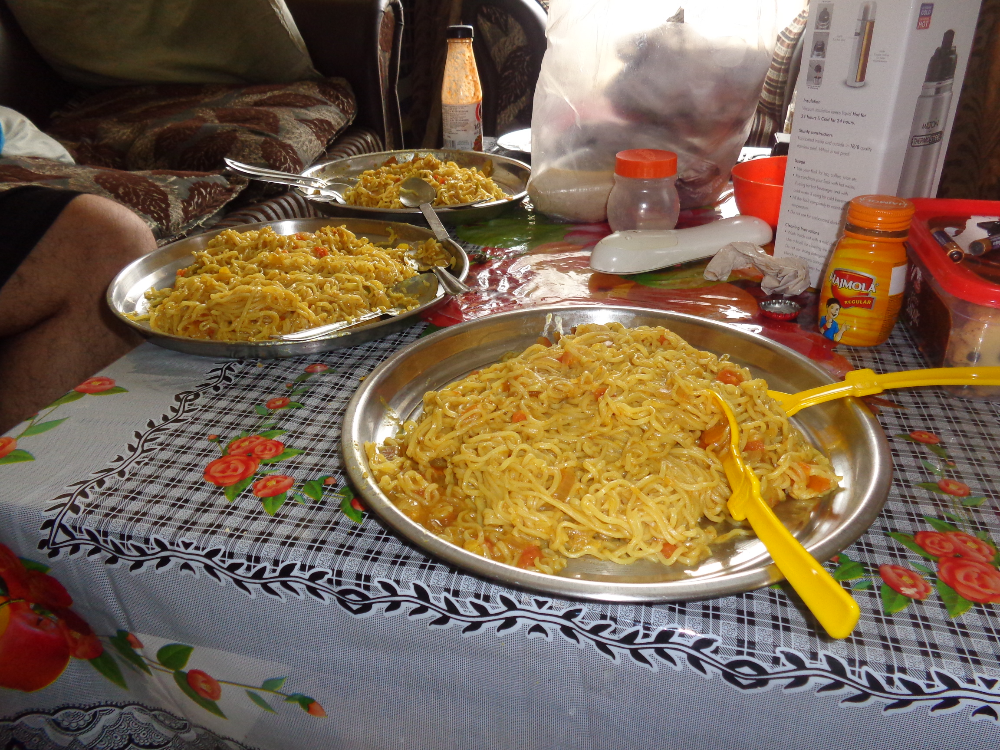

<app-header (isDisplaySideNav)="isDisplaySideNav=$event"></app-header>
<app-sidenav [isDisplaySideNav]="isDisplaySideNav" (closeSideNav)="closeNav()"></app-sidenav>
<app-carousel></app-carousel>

<!-- <div>
  
</div> -->
<!-- <app-sidenav [isDisplaySideNav]="true"></app-sidenav> -->